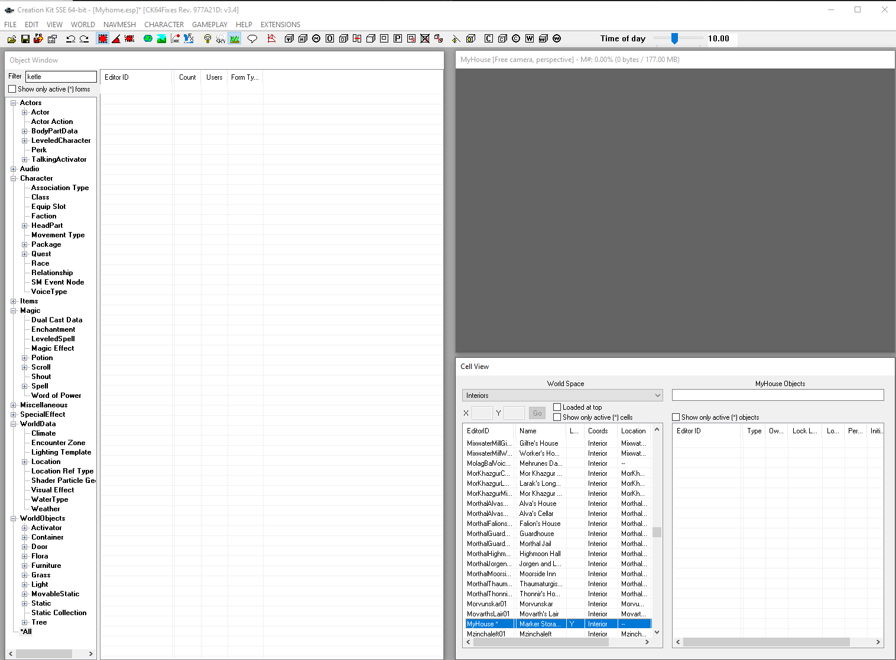
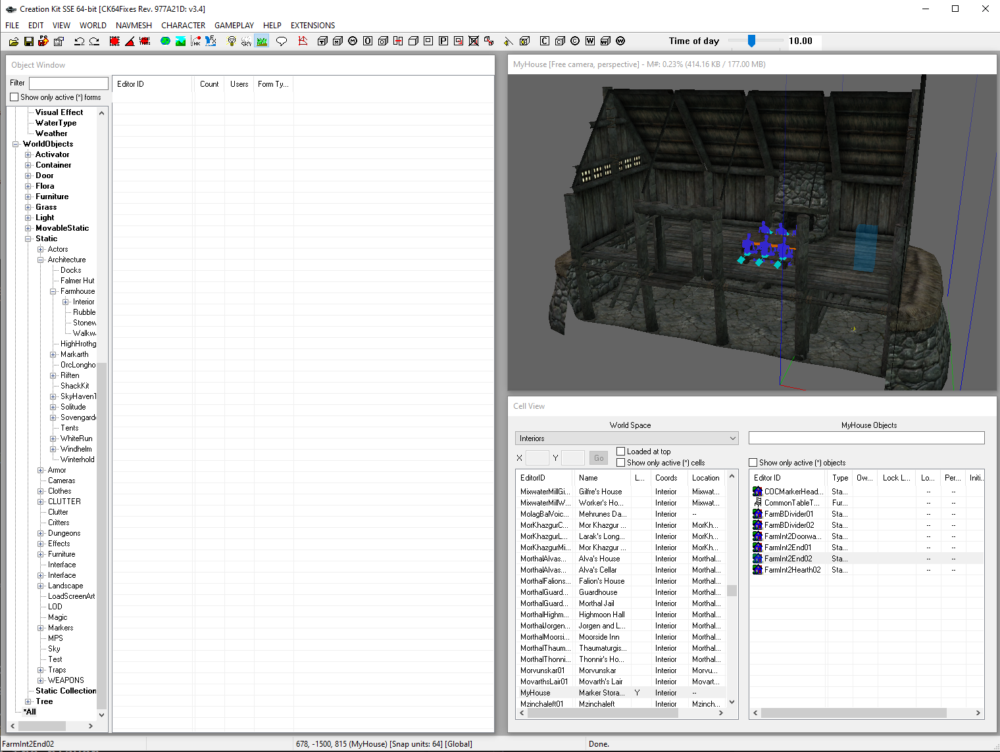
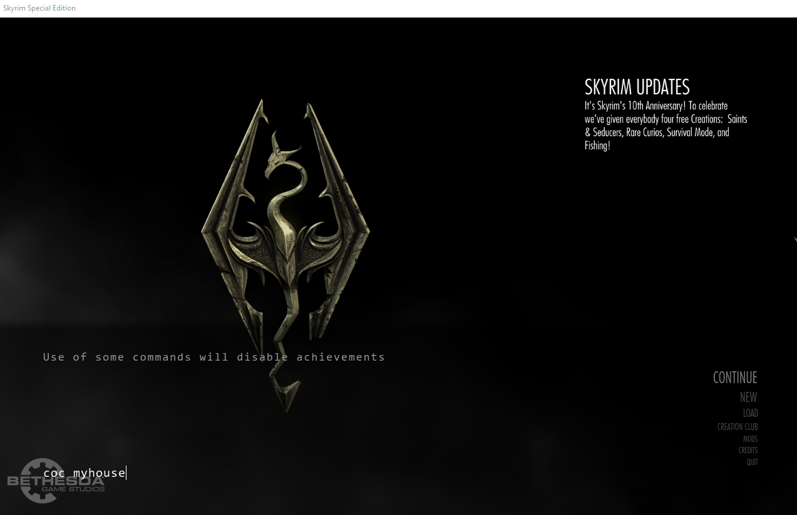
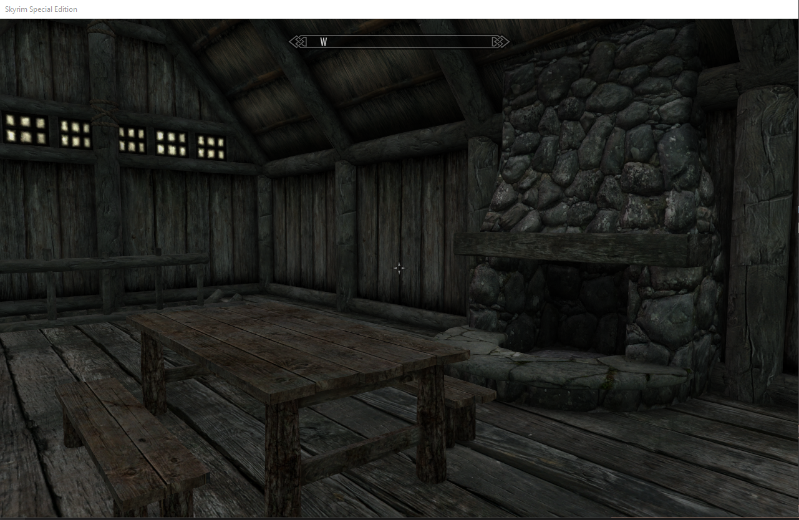
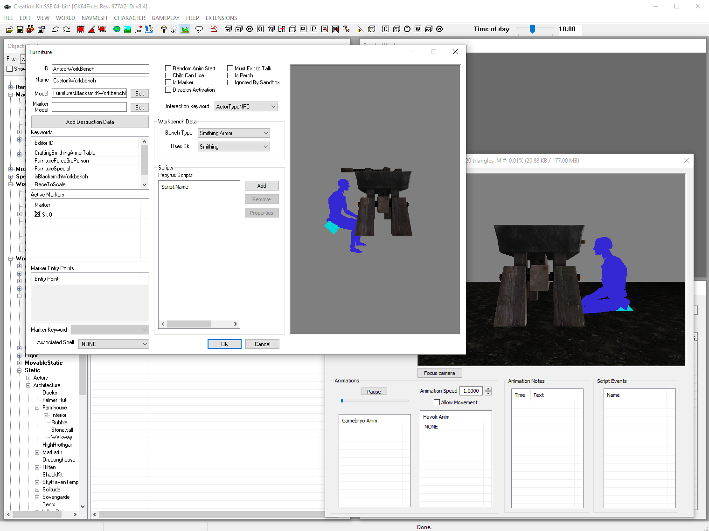
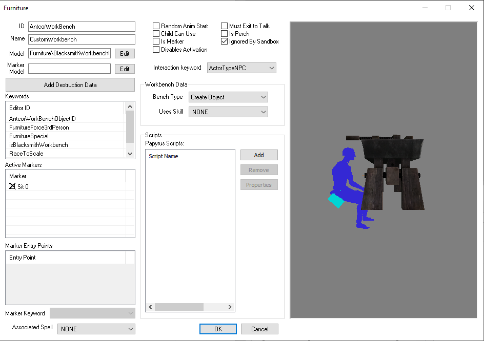
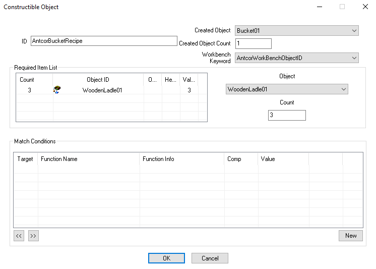

Project Z
Skyrim is one of the best games I have played in my life and
learning the same engine that Bethesda used to create it, has helped me
to understand what its like to work with AAA tools.
I have learned a lot about how systems work and connect with the rest
of the features like Characters, objects, quests, cells (levels), vfx,
stats just to mention a few
Below I show some of my work as modder on this engine
Custom cell
I created my own space to playtest my mods.
This helped me to load the game faster through the command console in a specific location




Custom crafting system
I created my own space to playtest my mods.
This helped me to load the game faster through the command console in a specific location



Quick showcase of my custom workbench creating an item with my custom ID